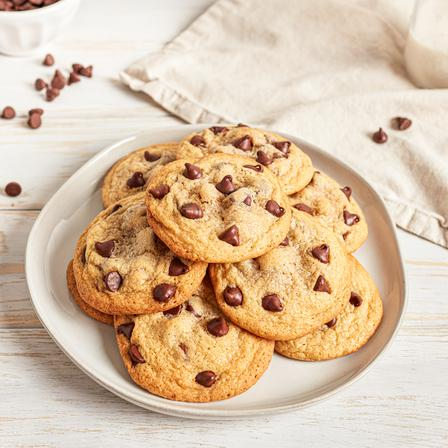

Chocolate Chip Cookies Recipe

Description
Chocolate chip cookies are a classic American dessert, loved for their crisp edges, chewy centers,
and melty chocolate chunks. Easy to bake and universally loved, they make a perfect treat for any occasion.
- 1 cup unsalted butter, softened
- 1 cup white sugar
- 1 cup brown sugar
- 2 large eggs
- 2 teaspoons vanilla extract
- 3 cups all-purpose flour
- 1 teaspoon baking soda
- 1/2 teaspoon baking powder
- 1/2 teaspoon salt
- 2 cups semisweet chocolate chips
Steps
- Preheat oven to 350°F (175°C).
- Cream together butter, white sugar, and brown sugar until fluffy.
- Beat in eggs and vanilla extract.
- In a separate bowl, whisk together flour, baking soda, baking powder, and salt.
- Gradually mix dry ingredients into wet mixture.
- Fold in chocolate chips.
- Drop spoonfuls of dough onto a baking sheet lined with parchment paper.
- Bake for 10–12 minutes until edges are golden brown. Cool on wire rack.
Home